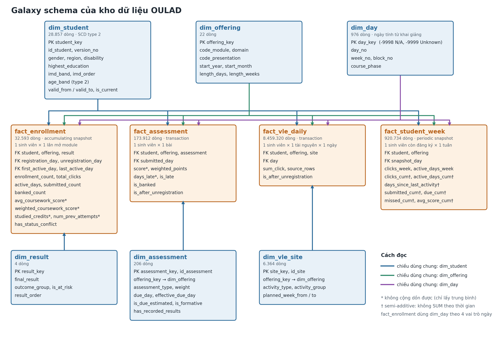

Tài liệu cho người chưa biết gì về kho dữ liệu. Đi từ khái niệm đầu tiên đến từng bảng, từng quyết định và từng con số trong phần việc của bạn.
Tháng 11/2026
docs/phan_tich_thiet_ke.md.Bạn không cần biết trước gì về kho dữ liệu. Mỗi từ chuyên môn đều được giải thích trước khi dùng, và tất cả được gom lại ở phụ lục cuối tài liệu. Nên đọc theo thứ tự, vì phần sau dùng khái niệm của phần trước.
Có bốn loại ô màu:
Nếu chỉ có năm phút, đây là toàn bộ nội dung:
fact_student_week ghi lại tình hình mỗi sinh viên vào cuối mỗi tuần, là nguyên liệu để hệ thống dự báo sinh viên nào có nguy cơ.Bài tập lớn chiếm 35% điểm môn, làm nhóm 2–3 người. Đề yêu cầu xây một hệ thống hoàn chỉnh qua 6 bước:
Hạn nộp là 23:59 ngày 15/11/2026, gồm báo cáo PDF, mã nguồn, dữ liệu mẫu, slide, và link video nếu nhóm không thuyết trình trực tiếp. Mọi thành viên đều phải trình bày, nên bạn cần hiểu phần mình đủ để tự giải thích và trả lời câu hỏi. Đây là lý do có tài liệu này.
Đề cũng có bảng chuẩn đầu ra. Phần của bạn đóng góp trực tiếp cho L.O.2.1 (quy trình thiết kế kho dữ liệu), L.O.2.2 (các vấn đề khi thiết kế) và một phần L.O.2.3 (hiện thực kho dữ liệu).
Hãy hình dung một siêu thị. Máy tính tiền ghi lại từng món hàng khách mua. Hệ thống này cần ghi nhanh và chính xác từng giao dịch nhỏ. Đó là cơ sở dữ liệu vận hành, gọi là OLTP.
Cuối tháng, giám đốc hỏi: "Năm nay, chi nhánh miền Trung bán sữa vào cuối tuần so với năm ngoái thế nào?". Câu hỏi này phải đọc hàng triệu dòng, gộp theo nhiều góc. Nếu chạy trên máy tính tiền, nó sẽ làm chậm quầy thu ngân, và dữ liệu lại không được sắp xếp để trả lời kiểu câu hỏi đó.
Vì thế người ta sao chép dữ liệu sang một nơi riêng, sắp xếp lại cho việc phân tích. Nơi đó là kho dữ liệu (Data Warehouse, DW), còn việc phân tích trên đó gọi là OLAP.
| Cơ sở dữ liệu vận hành (OLTP) | Kho dữ liệu (OLAP) | |
|---|---|---|
| Dùng để | Chạy công việc hằng ngày | Phân tích để ra quyết định |
| Thao tác chính | Thêm, sửa từng dòng | Đọc và gộp rất nhiều dòng |
| Dữ liệu | Trạng thái hiện tại | Lịch sử theo thời gian |
| Cách sắp xếp | Tách nhỏ để tránh trùng lặp | Gộp lại để truy vấn đơn giản, nhanh |
| Ví dụ | Máy tính tiền, web đăng ký môn | Báo cáo doanh số nhiều năm |
Kho dữ liệu cho biết điều gì đã xảy ra. Hệ hỗ trợ quyết định (Decision Support System, DSS) đi xa hơn: giúp con người chọn nên làm gì. Nó vẫn để con người quyết định, chỉ đưa ra thông tin và phương án.
Trong bài này: kho dữ liệu cho biết "tuần này sinh viên A chưa nộp bài, không vào web học". DSS dùng các số đó để xếp hạng rủi ro và gợi ý: "với 20 giờ cố vấn tuần này, nên gọi cho những sinh viên này trước". Phần DSS do bạn khác trong nhóm làm, nhưng nguyên liệu đầu vào của nó do thiết kế của bạn quyết định.
Đây là khái niệm quan trọng nhất. Nhìn vào một dòng trên hóa đơn siêu thị:
Ngày 02/11, chi nhánh Quận 1, khách Nguyễn A mua 2 hộp sữa Vinamilk, thành tiền 60.000 đồng
Dòng này gồm hai kiểu thông tin:
Tách ra như vậy có lợi gì? Khi hỏi "doanh số theo miền", chỉ cần nối bảng fact với dim_chi_nhanh rồi gộp theo cột miền. Muốn đổi sang "theo nhãn hàng" thì nối với dim_san_pham. Cùng một bảng fact trả lời được rất nhiều kiểu câu hỏi.
Grain là câu trả lời chính xác cho câu hỏi: "Mỗi dòng trong bảng fact này đại diện cho cái gì?". Bảng siêu thị có thể có grain là "một món hàng trên một hóa đơn", hoặc thô hơn là "tổng doanh số một chi nhánh trong một ngày".
Mọi bảng fact phải khai báo grain trước khi chọn cột. Khi thuyết trình, nếu thầy chỉ vào một bảng và hỏi "một dòng là gì?", bạn phải trả lời được ngay.
id_student.student_key.Tại sao lại cần tự cấp khóa khi đã có id_student? Vì một sinh viên có thể cần nhiều dòng để lưu lịch sử thay đổi (xem mục 3.6). Khi đó id_student sẽ bị lặp nên không còn làm khóa chính được.
Khách hàng chuyển nhà từ Hà Nội vào Sài Gòn. Các hóa đơn cũ nên tính cho Hà Nội hay Sài Gòn? Đây là bài toán SCD (Slowly Changing Dimension, chiều thay đổi chậm). Có hai cách phổ biến:
| Kiểu | Cách làm | Hệ quả |
|---|---|---|
| Type 1 | Ghi đè giá trị cũ | Đơn giản, nhưng mất lịch sử: các hóa đơn cũ cũng thành Sài Gòn |
| Type 2 | Thêm một dòng mới cho khách đó, có khóa thay thế mới | Giữ đúng lịch sử: hóa đơn cũ trỏ dòng Hà Nội, hóa đơn mới trỏ dòng Sài Gòn. Đổi lại, một khách có nhiều dòng |
| Mô hình | Nghĩa là | Khi nào dùng |
|---|---|---|
| Star | Một fact ở giữa, các chiều nối trực tiếp (Hình 2) | Mặc định, vì truy vấn đơn giản |
| Snowflake | Chiều được tách tiếp thành nhiều bảng nhỏ, ví dụ sản phẩm → ngành hàng | Khi tiết kiệm được đáng kể, đổi lại phải nối nhiều bảng hơn |
| Galaxy | Nhiều bảng fact dùng chung các bảng chiều (còn gọi là fact constellation) | Khi có nhiều quy trình nghiệp vụ. Thiết kế của bạn thuộc loại này |
Bảng chiều được nhiều fact dùng chung gọi là chiều dùng chung (conformed dimension). Nhờ đó có thể so sánh số liệu giữa các fact theo cùng một cách cắt.
ETL là quy trình đưa dữ liệu vào kho, gồm ba việc:
Staging là khu vực trung gian: một bản sao y nguyên dữ liệu gốc trong cơ sở dữ liệu, chưa sửa gì. Giống như bếp nhà hàng: nguyên liệu được đưa vào khu sơ chế (staging), sơ chế (transform), rồi mới lên món (kho). Nhờ có staging, nếu làm sai có thể làm lại mà không phải đọc lại file, và có thể so sánh kết quả với gốc.
Đây là những cách "xoay" dữ liệu trong phân tích. Ví dụ dưới đây lấy từ kết quả thật của bài:
| Thao tác | Nghĩa là | Ví dụ trong bài |
|---|---|---|
| Roll-up | Gộp lên mức tổng quát hơn | Từ từng module gộp lên lĩnh vực: STEM 55,2%, Social Sciences 48,2% |
| Drill-down | Khoan xuống chi tiết hơn | Từ module FFF xuống từng bài TMA của lần mở 2014J |
| Slice | Cố định một chiều | Chỉ xem lần mở 2014J |
| Dice | Cố định nhiều chiều | Chỉ xem STEM, năm 2014, nhóm IMD 0–10% |
| Pivot | Xoay hàng thành cột | Hàng là module, cột là lần mở, ô là số lượt ghi danh |
SQL là ngôn ngữ để hỏi cơ sở dữ liệu. Bạn chỉ cần đọc được kiểu câu lệnh sau. Đọc theo thứ tự FROM → JOIN → GROUP BY → SELECT, không phải từ trên xuống:
SELECT o.domain, o.code_module, -- 4. in ra các cột này
sum(f.enrollment_count) AS enrollments
FROM dw.fact_enrollment f -- 1. bắt đầu từ bảng fact, đặt tên tắt là f
JOIN dw.dim_offering o USING (offering_key) -- 2. nối sang bảng chiều qua khóa chung
GROUP BY ROLLUP (o.domain, o.code_module); -- 3. gộp theo lĩnh vực và module, có thêm dòng tổng
Kết quả thật (cột tỉ lệ được tính thêm bằng một phép chia):
| domain | code_module | enrollments | Tỉ lệ có nguy cơ |
|---|---|---|---|
| Social Sciences | AAA | 748 | 29,0% |
| Social Sciences | BBB | 7.909 | 52,5% |
| Social Sciences | GGG | 2.534 | 40,3% |
| Social Sciences | (dòng tổng của lĩnh vực) | 11.191 | 48,2% |
| … các module STEM … | |||
| (tổng toàn bộ) | 32.593 | 52,8% | |
Một câu lệnh ngắn đã cho ra cả chi tiết lẫn dòng tổng. Đây là sức mạnh của thiết kế dạng fact và dimension.
Open University là đại học từ xa của Anh. Sinh viên học qua web. Bộ dữ liệu do chính nhóm nghiên cứu của trường công bố, kèm một bài báo mô tả (Kuzilek và cộng sự, 2017).
| Từ trong dữ liệu | Nghĩa |
|---|---|
| Module | Một môn học. Có 7 môn, tên được ẩn thành AAA đến GGG. |
| Presentation | Một lần mở môn đó, ghi bằng năm và chữ cái của tháng bắt đầu: 2013J là tháng 10/2013, 2014B là tháng 2/2014. Tài liệu này gọi là lần mở; cặp module và presentation gọi là offering, có 22 cái. |
| VLE | Virtual Learning Environment, web học trực tuyến. |
| Site, activity type | Một tài nguyên trên web học (site) và loại của nó (activity type), như quiz, forumng (diễn đàn), resource. |
| TMA | Tutor Marked Assessment, bài do giảng viên chấm. |
| CMA | Computer Marked Assessment, bài do máy chấm. |
| Exam | Bài thi cuối khóa. |
| Banked | Điểm được chuyển từ lần học trước, sinh viên không phải làm lại bài. |
| final_result | Kết quả cuối: Distinction (giỏi), Pass (đậu), Fail (rớt), Withdrawn (rút học). |
| IMD band | Index of Multiple Deprivation, mức độ khó khăn của khu vực sinh viên sống, chia thành 10 nhóm. Tài liệu này hiểu 0–10% là khó khăn nhất theo cách dùng phổ biến của chỉ số này; bài báo gốc không nói rõ chiều, nhưng số liệu của bài cũng khớp với cách hiểu đó. |
| Credits | Tín chỉ. |
| File | Số dòng | Mỗi dòng là | Ví dụ thật |
|---|---|---|---|
courses | 22 | Một lần mở | AAA, 2013J, dài 268 ngày |
assessments | 206 | Một bài đánh giá | Bài 1752, TMA, hạn ngày 19, trọng số 10 |
vle | 6.364 | Một tài nguyên | Site 909087 của CCC-2014J, loại quiz |
studentInfo | 32.593 | Một lượt ghi danh | Sinh viên 28400, nữ, Scotland, học AAA-2013J, Pass |
studentRegistration | 32.593 | Ngày đăng ký và hủy | Sinh viên 28400 đăng ký ngày -53, không hủy |
studentAssessment | 173.912 | Một lượt nộp bài | Sinh viên 28400 nộp bài 1752 ngày 22, được 70 điểm |
studentVle | 10.655.280 | Một bản ghi click | Sinh viên 23698, site 909087, ngày 9, 78 click |
studentAssessment không có cột module, nên muốn biết bài nộp thuộc lần mở nào phải đi qua assessments. Đã kiểm tra: mọi khóa nối đều khớp, không có dòng nào trỏ vào hư không.
studentInfo có 32.593 dòng nhưng chỉ có 28.785 sinh viên, vì một người có thể học nhiều môn hoặc học lại. Nên mỗi dòng là một lượt ghi danh, không phải một sinh viên.Profiling là việc kiểm tra dữ liệu trước khi thiết kế: có bao nhiêu dòng, cột nào thiếu, khóa có trùng không, giá trị có lạ không. Không làm bước này thì thiết kế dựa trên phỏng đoán, và thực tế đã cho thấy nhiều phỏng đoán ban đầu của kế hoạch là sai.
Mục này giải thích từng vấn đề tìm thấy và cách xử lý. Đây chính là chất liệu cho L.O.2.2.
Các cột ngày trải từ -365 đến 608. Nguồn chỉ cho biết tháng khai giảng, không có ngày cụ thể. Nếu tự đặt "2013J bắt đầu ngày 1/10/2013" thì mọi ngày phía sau đều là số giả. Cách xử lý: làm bảng thời gian theo ngày tương đối, không có ngày lịch.
Theo lẽ thường, ta nghĩ mỗi sinh viên, mỗi tài nguyên, mỗi ngày chỉ có một dòng. Thực tế 10.655.280 dòng chỉ ứng với 8.459.320 tổ hợp như vậy.
Cách xử lý: cộng các dòng lại thành một, ghi số dòng đã cộng vào source_rows.
Khó hơn: trong đó có 787.170 dòng trùng hoàn toàn với dòng khác. Đây là lỗi hay là tương tác thật? Nguồn không có cột giờ nên không thể chắc chắn. Mình quyết định giữ lại, vì:
quiz, hợp với việc làm bài nhiều lần.Đây vẫn là giả định cần ghi rõ. Nếu sai, tổng click cao hơn thực tế tối đa 3,19%.
File CSV ghi giá trị thiếu là "" có dấu nháy. Khi nạp vào PostgreSQL, ô đó thành chuỗi rỗng chứ không phải NULL (giá trị trống thật sự), và đổi sang số sẽ báo lỗi. Lỗi này được phát hiện khi chạy thử. Cách xử lý: viết NULLIF(cot, '')::int, nghĩa là "nếu rỗng thì coi là NULL, rồi đổi sang số".
1.111 dòng không có IMD. Nếu thiếu ngẫu nhiên, ta có thể điền giá trị phổ biến. Nhưng 89,7% số dòng thiếu nằm ở hai vùng: North Region (thiếu 40,1%) và Ireland (thiếu 22,5%). Nhóm thiếu này cũng có tỉ lệ có nguy cơ chỉ 34,3%, khác hẳn các nhóm khác (42,5–64,8%). Điền bù sẽ làm sai lệch kết quả.
Cách xử lý: gán nhãn Unknown và để thành nhóm riêng. Ngoài ra, nhãn 10-20 thiếu dấu % nên được sửa thành 10-20%, và thêm cột imd_order để sắp xếp đúng thứ tự.
Ở 72 sinh viên, nhóm tuổi đổi giữa các lượt ghi danh, và luôn đổi lên nhóm cao hơn, đúng với việc người ta già đi. Các thuộc tính khác không hề đổi.
student_key 875 và 876.Cách xử lý: SCD type 2 (xem mục 3.6).
studied_credits nhìn giống tín chỉ của môn đó. Nhưng cả 1.078 trường hợp học nhiều môn cùng kỳ đều có giá trị giống hệt nhau ở các dòng, và bài báo cũng định nghĩa đây là tổng tín chỉ sinh viên đang học. Hệ quả: không được SUM, nếu không sẽ tính trùng.
| Hiện tượng | Số liệu | Cách xử lý |
|---|---|---|
| Bài thi không có hạn nộp | 11 bài | Lấy ngày cuối khóa theo quy ước của bài báo, thêm cờ đánh dấu là ước tính |
| Điểm thi chỉ có ở CCC, DDD | 18 bài thi không có lượt nộp | Không tính điểm tổng kết, dùng final_result |
Ngày nộp bài thi lệch so với date | Có bài nộp sớm 20 ngày theo trung vị | Không tính số ngày trễ cho bài thi |
| Bài có trọng số 0 | 56 bài, gồm mọi bài thường kỳ của GGG | Thêm cờ is_formative. GGG không có điểm có trọng số vì sẽ phải chia cho 0 |
| Bài banked ghi ngày nộp là -1 | 1.909 dòng | Ngày -1 là giả, nên đặt thành "Không áp dụng", không tính trễ |
| Thiếu điểm | 173 dòng, đều là TMA | Giữ NULL |
| CMA có 47,2% lượt nộp trễ | Lệch từ -246 đến 372 ngày | Có thể CMA không có hạn cứng (giả thuyết). KPI nộp trễ chính chỉ dùng TMA (16,8%) |
has_status_conflict (tổng 102 dòng).Bước này trả lời: làm kho dữ liệu để phục vụ ai, giúp họ quyết định điều gì? Thiếu câu trả lời này, kho dữ liệu chỉ là một đống bảng. Đề bài ghi rõ yêu cầu "phân tích yêu cầu nghiệp vụ và xác định bài toán cần giải quyết".
"Có nguy cơ" (at-risk) được định nghĩa là kết quả Fail hoặc Withdrawn. Đây là định nghĩa của nhóm, cần nhóm xác nhận.
| Người dùng | Câu hỏi họ cần trả lời | Tần suất |
|---|---|---|
| Cố vấn học tập | Tuần này liên hệ ai, bằng hình thức gì? | Hằng tuần |
| Trưởng học phần | Bài nào, tài nguyên nào cần sửa? Phân bổ giờ cố vấn thế nào? | Mỗi lần mở |
| Ban điều hành khoa | So sánh các module, nhóm sinh viên nào cần chính sách hỗ trợ? | Mỗi kỳ |
Các câu hỏi này đã được chạy thử trên kho dữ liệu thật. Lưu ý: tất cả đều là tương quan, tức hai thứ đi cùng nhau, chưa chứng minh cái này gây ra cái kia.
| Cắt theo | Tỉ lệ có nguy cơ |
|---|---|
| Lĩnh vực | STEM 55,2% · Social Sciences 48,2% |
| Module | AAA 29,0 · GGG 40,3 · EEE 43,8 · BBB 52,5 · FFF 53,0 · DDD 58,4 · CCC 62,2 (%) |
| Mức IMD | Nhìn chung giảm dần: 64,8% (0–10%) → 42,5% (90–100%) |
| Trình độ đầu vào | No Formal 70,3 · Lower Than A Level 61,1 · A Level 48,0 · HE 43,8 · Post Graduate 34,5 (%) |
| Khuyết tật | Có 61,9% · Không 51,8% |
Đọc thế nào: sinh viên ở khu vực khó khăn và có trình độ đầu vào thấp có nguy cơ cao hơn. Kết quả này gợi ý nhóm cần hỗ trợ, nhưng không có nghĩa nên đánh giá một cá nhân chỉ dựa trên nền tảng của họ.
| Thời điểm hủy đăng ký | Số lượt | Tỉ lệ |
|---|---|---|
| Trước khai giảng | 2.678 | 26,6% |
| Đúng ngày 0 | 419 | 4,2% |
| Ngày 1–27 | 1.943 | 19,3% |
| Ngày 28–83 | 1.820 | 18,1% |
| Từ ngày 84 | 3.212 | 31,9% |
Đọc thế nào: 30,7% ca rút xảy ra trước khi khóa học thực sự diễn ra, nên hệ cảnh báo dựa trên hành vi học khó phát hiện các ca đó. Một kết quả trái với dự đoán ban đầu: nhóm đăng ký trước từ 90 ngày lại rút nhiều hơn (38,2%) nhóm đăng ký trước 1–29 ngày (25,3%).
Số liệu ở week_no = 7, tức tuần thứ 8 của khóa:
| Kết quả cuối | Còn học | Click TB/tuần | Không click trong tuần | Bài bỏ lỡ TB |
|---|---|---|---|---|
| Distinction | 3.024 | 78,1 | 12,2% | 0,16 |
| Pass | 12.358 | 58,3 | 14,6% | 0,20 |
| Fail | 7.039 | 26,1 | 45,9% | 0,69 |
| Withdrawn | 4.102 | 33,9 | 35,4% | 0,62 |
Đọc thế nào: từ tuần thứ 8 đã thấy nhóm rớt và rút học ít tương tác hơn rõ rệt. Số "Còn học" của Withdrawn thấp vì nhiều người đã rút trước đó.
| Loại | Số lượt nộp | Điểm TB | Dưới 40 điểm | Nộp trễ |
|---|---|---|---|---|
| TMA | 98.426 | 72,6 | 5,4% | 16,8% |
| CMA | 70.527 | 81,0 | 2,5% | 47,2% |
| Exam (chỉ CCC, DDD) | 4.959 | 65,6 | 11,4% | không tính |
Theo bài báo, dưới 40 điểm được xem là không đạt. Khoan xuống FFF-2014J: tỉ lệ nộp 5 bài TMA giảm dần 77,2 → 67,7 → 59,1 → 55,3 → 48,1%, trong khi điểm trung bình chỉ dao động 73–79. Đọc thế nào: gợi ý vấn đề nằm ở việc sinh viên bỏ dở nhiều hơn là bài quá khó, dù điểm chỉ tính trên những người còn nộp.
Tỉ lệ có nguy cơ: 50,7% với người học lần đầu, 65,4% khi đã học 1 lần, 72,5% khi đã học từ 2 lần. Người học lại cần được chú ý hơn.
| Số bài bỏ lỡ tính đến tuần thứ 8 | Sinh viên | Tỉ lệ có nguy cơ |
|---|---|---|
| 0 | 18.814 | 33,0% |
| 1 | 5.644 | 53,3% |
| Từ 2 | 2.065 | 92,8% |
Đọc thế nào: đã có tín hiệu mạnh từ sớm, nên làm DSS là có cơ sở. Nhưng đây mới là một tín hiệu, chưa phải mô hình dự báo đã được đánh giá.
KPI là chỉ số dùng để theo dõi tình hình. Mỗi KPI phải có công thức rõ ràng và biết lấy từ bảng nào:
| KPI | Công thức | Bảng nguồn |
|---|---|---|
| Tỉ lệ có nguy cơ | (Fail + Withdrawn) / tổng lượt ghi danh | fact_enrollment |
| Tỉ lệ rút học | Withdrawn / tổng lượt ghi danh | fact_enrollment |
| Số sinh viên | COUNT(DISTINCT id_student) | dim_student |
| Tỉ lệ nộp bài | Số lượt nộp / số sinh viên của lần mở | fact_assessment, fact_enrollment |
| Tỉ lệ nộp trễ | Trung bình is_late, ưu tiên TMA | fact_assessment |
| Điểm trung bình | AVG(score) | fact_assessment |
| Click mỗi tuần | AVG(clicks_week), tính cả tuần không hoạt động | fact_student_week |
| Tỉ lệ không hoạt động | Số dòng clicks_week = 0 / tổng số dòng | fact_student_week |
| Số bài bỏ lỡ | missed_cum | fact_student_week |
Nói rõ giới hạn là một phần của phân tích tốt. Dữ liệu không có ngày lịch thật, điểm tổng kết, điểm thi của 5/7 module, số giờ cố vấn, và các can thiệp đã thực hiện. Vì thế:
Thiết kế theo phương pháp trong cuốn The Data Warehouse Toolkit, có trong tài liệu tham khảo của đề:
| Bước | Câu hỏi | Áp dụng vào bài |
|---|---|---|
| 1. Chọn quy trình nghiệp vụ | Sự kiện nào cần đo? | Ghi danh, nộp bài, tương tác web học, theo dõi tiến độ tuần |
| 2. Khai báo grain | Một dòng là gì? | Xem mục 7.5 |
| 3. Xác định chiều | Cắt số liệu theo góc nào? | Sinh viên, lần mở, ngày, kết quả, bài, tài nguyên |
| 4. Xác định độ đo | Đo con số gì? | Click, điểm, số ngày trễ, số bài bỏ lỡ |
Bus matrix là bảng tóm tắt: hàng là quy trình nghiệp vụ, cột là chiều, dấu ✓ nghĩa là quy trình đó dùng chiều đó. Nhìn cột có nhiều dấu ✓ là biết chiều nào được dùng chung.
| Quy trình | Bảng fact | student | offering | day | result | assessment | vle_site |
|---|---|---|---|---|---|---|---|
| Ghi danh và kết quả | fact_enrollment | ✓ | ✓ | ✓ (4 vai trò) | ✓ | ||
| Nộp bài | fact_assessment | ✓ | ✓ | ✓ | ✓ | ||
| Tương tác web học | fact_vle_daily | ✓ | ✓ | ✓ | ✓ | ||
| Tiến độ tuần | fact_student_week | ✓ | ✓ | ✓ |
"4 vai trò" nghĩa là fact_enrollment trỏ tới dim_day bốn lần với bốn ý nghĩa: ngày đăng ký, ngày hủy, ngày hoạt động đầu tiên, ngày hoạt động cuối cùng.

docs/schema_dw.png.dim_student: sinh viên (28.857 dòng)Chứa giới tính, vùng, trình độ, IMD, nhóm tuổi, khuyết tật. Số dòng lớn hơn 28.785 sinh viên vì 72 người có 2 phiên bản (SCD type 2). Các cột đáng chú ý:
student_key: khóa thay thế, mỗi phiên bản một số.id_student: mã gốc. Dùng cột này khi đếm số người.version_no, valid_from_presentation, valid_to_presentation, is_current: cho biết phiên bản thứ mấy và áp dụng từ lần mở nào đến lần mở nào.student_key ra 28.857 là sai. Đếm sinh viên phải dùng COUNT(DISTINCT id_student) = 28.785.Có 1 sinh viên có 2 nhóm tuổi trong cùng một kỳ, vì học 2 môn. Vì thế khi nạp, không tra phiên bản theo thời gian mà tra theo cặp (id_student, age_band) của đúng lượt ghi danh đó.
dim_offering: một lần mở môn (22 dòng)Gộp thông tin module và lần mở: mã module, lĩnh vực, mã lần mở, năm, tháng bắt đầu, độ dài. Lĩnh vực lấy từ Bảng 1 của bài báo gốc vì CSV không có: AAA, BBB, GGG là Social Sciences; CCC, DDD, EEE, FFF là STEM.
dim_day: ngày trong khóa học (976 dòng)Mỗi dòng là một ngày tương đối, từ -365 đến 608 (974 ngày), cộng 2 dòng đặc biệt. Có các cột để gộp lên: week_no (tuần), block_no (khối 4 tuần), course_phase (trước hoặc sau khai giảng).
| day_key | Nghĩa | Dùng khi |
|---|---|---|
| -9998 | Không áp dụng | Sinh viên không hủy đăng ký; bài banked |
| -9999 | Không rõ | Đáng lẽ phải có ngày nhưng dữ liệu thiếu |
"Không áp dụng" và "Không rõ" là hai chuyện khác nhau: người Pass thì không có ngày hủy là đúng, còn người Withdrawn mà không có ngày hủy là thiếu dữ liệu. Dùng dòng đặc biệt thay vì NULL giúp phân biệt được hai trường hợp này, và phép nối bảng không làm mất dòng.
dim_result: kết quả (4 dòng)Distinction, Pass thuộc nhóm Successful; Fail, Withdrawn thuộc nhóm At risk. Nếu nhóm đổi định nghĩa "có nguy cơ", chỉ cần sửa ở đây.
dim_assessment: bài đánh giá (206 dòng)Loại bài, trọng số, hạn nộp gốc (due_day, có thể trống), hạn dùng để tính (effective_due_day, luôn có), và các cờ is_due_estimated, is_formative, has_recorded_results.
dim_vle_site: tài nguyên học (6.364 dòng)Có activity_type gốc (20 loại) và activity_group (4 nhóm) để gộp lên. Cách chia 4 nhóm do nhóm tự đặt, tài liệu gốc không định nghĩa:
| Nhóm | Các loại | Tỉ lệ click |
|---|---|---|
| Content | oucontent, resource, subpage, page, url, dualpane, folder, htmlactivity, sharedsubpage, repeatactivity, glossary | 41,6% |
| Collaboration | forumng, ouwiki, oucollaborate, ouelluminate, dataplus | 22,9% |
| Practice | quiz, externalquiz, questionnaire | 18,0% |
| Navigation | homepage | 17,5% |
Có ba loại bảng fact theo Kimball, và thiết kế dùng cả ba. Cách nhớ dễ nhất:
| Loại | Giống như | Đặc điểm |
|---|---|---|
| Transaction | Từng dòng sao kê ngân hàng | Mỗi sự kiện một dòng, ghi xong không đổi |
| Periodic snapshot | Số dư cuối mỗi tháng | Chụp lại tình trạng theo chu kỳ, kể cả khi không có gì xảy ra |
| Accumulating snapshot | Trạng thái đơn hàng: đặt, giao, nhận | Mỗi đối tượng một dòng, các mốc được điền dần |
fact_enrollment: một sinh viên trong một lần mở (32.593 dòng)Loại accumulating snapshot, tóm tắt cả quá trình học môn đó: ngày đăng ký, ngày hủy, ngày hoạt động đầu và cuối, tổng click, số ngày hoạt động, số bài đã nộp, điểm trung bình, kết quả.
fact_assessment: một sinh viên nộp một bài (173.912 dòng)Loại transaction. Có score, weighted_points (điểm nhân trọng số), days_late (số ngày trễ, âm là nộp sớm), is_late, is_banked, is_after_unregistration.
fact_vle_daily: một sinh viên, một tài nguyên, một ngày (8.459.320 dòng)Loại transaction, là bảng lớn nhất. Có sum_click và source_rows (số dòng nguồn đã cộng). Đi kèm bảng tổng hợp agg_vle_offering_week_activity chỉ 8.436 dòng, ít hơn khoảng 1.000 lần, để dashboard chạy nhanh.
fact_student_week: một sinh viên còn đăng ký vào cuối một tuần (920.734 dòng)Loại periodic snapshot, là bảng quan trọng nhất cho DSS. Có thể hình dung đây là tấm ảnh chụp mỗi cuối tuần: tuần này click bao nhiêu, tổng tới giờ bao nhiêu, đã bỏ lỡ bao nhiêu bài, đã bao nhiêu ngày không vào web. Mục 9 sẽ lần theo từng dòng của một sinh viên thật.
Không phải con số nào cũng cộng được. Tính sai loại này là lỗi rất phổ biến khi làm dashboard:
| Loại | Độ đo | Vì sao |
|---|---|---|
| Additive (cộng được theo mọi chiều) | sum_click, total_clicks, clicks_week, enrollment_count, submitted_count | Tổng click của cả lớp là con số có nghĩa |
| Semi-additive (không cộng theo thời gian) | Các cột *_cum, days_since_last_activity | Lũy kế tuần 3 cộng lũy kế tuần 4 thì tính trùng, giống cộng số dư ngân hàng của hai tháng |
| Non-additive (không cộng được) | score, days_late, avg_*, studied_credits, num_prev_attempts | Cộng điểm của 2 bài không có nghĩa, chỉ nên lấy trung bình |
Đây là phần thầy dễ hỏi nhất. Với mỗi quyết định, hãy nhớ cả phương án bị loại.
Kế hoạch ban đầu định tách dim_module, dim_domain, dim_presentation. Sau khi xem dữ liệu, mình gộp hết vào dim_offering, vì độ dài khóa phụ thuộc vào cả cặp module và lần mở, và bảng chỉ có 22 dòng nên tách ra không tiết kiệm được gì mà còn phải nối thêm bảng.
Ngoại lệ: dim_assessment và dim_vle_site có offering_key, vì 18 bài thi và 96 tài nguyên chưa từng có hoạt động nên không xuất hiện trong fact. Nếu không có cột này sẽ không biết chúng thuộc lần mở nào.
Nguồn chỉ có tháng khai giảng. Tháng và năm được đặt ở dim_offering, còn dim_day chỉ chứa ngày tương đối. Mốc "sau khi kết thúc khóa" cũng không đưa vào dim_day vì mỗi lần mở dài khác nhau.
Tại sao không chỉ lưu tuần có click, cho bảng nhỏ hơn? Vì không làm gì cũng là một tín hiệu. Ở tuần thứ 8, 45,9% sinh viên Fail không click, so với 14,6% ở nhóm Pass. Nếu không có dòng cho tuần đó thì mô hình không nhìn thấy tín hiệu này.
Rò rỉ dữ liệu (data leakage) là khi mô hình được nhìn thấy thông tin mà ngoài đời chưa thể biết. Mô hình sẽ đạt điểm rất cao khi thử nhưng vô dụng khi dùng thật. Giống như làm đề thi khi đã có đáp án.
fact_student_week.Thiết kế chống rò rỉ bằng ba cách:
fact_enrollment.Còn một giới hạn: avg_score_cum coi điểm là biết ngay khi nộp, trong khi thực tế phải chờ chấm, và nguồn không có ngày trả điểm. Bạn làm DSS nên thử thêm trường hợp điểm về trễ 1–2 tuần.
Dòng bất thường được giữ và gắn cờ thay vì xóa. Nhờ vậy tổng số luôn khớp với nguồn, và ai muốn loại thì lọc theo cờ. Xóa đi sẽ không thể kiểm tra lại.
Phân vùng (partitioning) là chia bảng lớn thành nhiều phần. Với 8,46 triệu dòng, truy vấn quét toàn bảng khi chạy thử mất khoảng 1,5 giây nên chưa cần. Nếu dữ liệu lớn hơn có thể phân vùng theo offering_key.
DDL là câu lệnh tạo bảng. File src/sql/01_ddl_dw.sql chứa toàn bộ thiết kế. Đọc một đoạn:
CREATE TABLE dw.fact_vle_daily (
student_key INT NOT NULL REFERENCES dw.dim_student, -- khóa ngoại, không được trống
offering_key SMALLINT NOT NULL REFERENCES dw.dim_offering,
site_key INT NOT NULL REFERENCES dw.dim_vle_site,
day_key INT NOT NULL REFERENCES dw.dim_day,
sum_click INT NOT NULL CHECK (sum_click > 0), -- độ đo, phải lớn hơn 0
source_rows SMALLINT NOT NULL,
is_after_unregistration BOOLEAN NOT NULL, -- cờ đúng/sai
PRIMARY KEY (student_key, site_key, day_key) -- grain, không được trùng
);
Dòng PRIMARY KEY chính là grain được viết thành luật: cơ sở dữ liệu sẽ từ chối nếu một sinh viên có hai dòng cho cùng tài nguyên và cùng ngày. Thiết kế không chỉ nằm trên giấy mà được cơ sở dữ liệu kiểm tra thực sự.
Thiết kế ETL trả lời: làm thế nào để dữ liệu đi từ 7 file CSV vào đúng các bảng trên? Đề bài ghi rõ thiết kế kho dữ liệu "bao gồm cả quy trình ETL", nên đây là một phần trong việc của bạn. Thiết kế gồm: chạy những việc gì, theo thứ tự nào, biến đổi ra sao, gặp lỗi thì làm gì, và làm sao biết kết quả đúng. Bạn làm ETL sẽ dựa vào đó để viết chương trình.
Thứ tự không tùy tiện:
dim_offering đi trước dim_assessment và dim_vle_site, vì hai bảng này cần offering_key.fact_enrollment nạp sau fact_vle_daily và fact_assessment, vì tổng click và số bài nộp được tính từ hai bảng đó.fact_vle_daily.Cụ thể, quy trình được chia thành 13 job (công việc nhỏ), chạy lần lượt:
| Job | Việc làm | Số dòng đúng |
|---|---|---|
| J01 | Kiểm tra đủ 7 file, đúng tên cột | |
| J02 | Tạo lại các bảng, chép file vào staging | Như mục 4.2 |
| J03 | Tạo dim_student, xử lý SCD type 2 | 28.857 |
| J04 | Tạo dim_offering | 22 |
| J05 | Sinh dim_day, dim_result | 976; 4 |
| J06 | Tạo dim_assessment, dim_vle_site | 206; 6.364 |
| J07 | Tạo fact_assessment | 173.912 |
| J08 | Tạo fact_vle_daily, gộp các dòng click | 8.459.320 |
| J09 | Tạo fact_enrollment, tổng hợp từ J07 và J08 | 32.593 |
| J10 | Tạo fact_student_week | 920.734 |
| J11 | Làm mới bảng tổng hợp | 8.436 |
| J12 | ANALYZE: cập nhật thống kê để PostgreSQL chọn cách truy vấn nhanh | |
| J13 | Chạy bài kiểm tra sau khi nạp | 29 phép đều đạt |
Công cụ đề xuất: Python chỉ điều phối thứ tự và ghi log, còn việc biến đổi viết bằng SQL chạy ngay trong PostgreSQL, vì không phải kéo 10 triệu dòng vào bộ nhớ. Khi chạy thử, câu SQL tạo fact_vle_daily mất khoảng 27 giây, fact_student_week khoảng 8 giây.
OULAD là dữ liệu lịch sử, không thay đổi. Vì thế ETL dùng cách đơn giản nhất: xóa và nạp lại toàn bộ (full reload), chạy bao nhiêu lần cũng ra cùng kết quả. Nếu sau này có lần mở mới thì chỉ nạp thêm phần đó, và kiểm tra nhóm tuổi để tạo phiên bản SCD mới. Phần nạp thêm này chưa được thiết kế chi tiết vì nằm ngoài phạm vi bài.
Bảng ánh xạ ghi rõ mỗi cột đích lấy từ đâu, biến đổi thế nào. Bản đầy đủ ở mục 4.2 của phan_tich_thiet_ke.md. Vài dòng tiêu biểu:
| Cột đích | Nguồn | Biến đổi |
|---|---|---|
dim_student.imd_band | imd_band | Rỗng → Unknown; 10-20 → 10-20% |
dim_offering.length_weeks | module_presentation_length | Chia 7, làm tròn lên |
dim_assessment.effective_due_day | assessments.date | Thiếu thì lấy ngày cuối khóa |
fact_enrollment.unregistration_day_key | date_unregistration | Thiếu: Withdrawn → -9999, còn lại → -9998 |
fact_assessment.days_late | Ngày nộp, hạn nộp | Trừ hai ngày; banked hoặc Exam → NULL |
fact_vle_daily.sum_click | student_vle | SUM theo sinh viên × tài nguyên × ngày |
Đây là phần khó nhất. Với mỗi tuần w (bắt đầu từ 0), ngày cuối tuần là end = 7w + 6. Một dòng chỉ được tạo khi:
(chưa có ngày đăng ký HOẶC ngày đăng ký <= end) VÀ (không hủy HOẶC ngày hủy > end)
Nói cách khác, sinh viên đó đã đăng ký và chưa hủy tính đến cuối tuần. Các cột được tính như sau:
| Cột | Cách tính |
|---|---|
clicks_week | Tổng click trong đoạn từ ngày 7w đến end |
clicks_cum | Tổng click đến end, gồm cả trước khai giảng |
days_since_last_activity | end trừ ngày hoạt động gần nhất; chưa hoạt động lần nào → NULL |
submitted_cum | Số TMA, CMA đã nộp đến end, không tính banked |
due_cum | Số TMA, CMA đã đến hạn tính đến end |
missed_cum | Số bài đã đến hạn mà chưa nộp đến end, bài banked coi như đã có |
avg_score_cum | Điểm trung bình các bài đã nộp đến end, không tính banked |
Điểm hay của missed_cum: một bài nộp trễ được tính là bỏ lỡ ở tuần quá hạn, rồi hết bỏ lỡ từ tuần nộp. Đây đúng là những gì cố vấn nhìn thấy vào thời điểm đó.
| Tình huống | Cách xử lý |
|---|---|
| Thiếu file, sai cột, không đổi được kiểu dữ liệu | Dừng toàn bộ, ghi FAILED |
Vi phạm khóa chính, khóa ngoại, CHECK | Dừng toàn bộ. Có nghĩa là dữ liệu hoặc logic đã thay đổi |
| Dòng bất thường đã biết (mục 5) | Giữ lại và gắn cờ, không loại |
| Bài kiểm tra J13 không đạt | Ghi FAILED, không dùng dữ liệu này cho dashboard hay DSS |
| Chạy lại sau khi lỗi | Chạy lại từ đầu, vì J02 tạo lại toàn bộ bảng |
Mỗi job chạy trong một transaction, nghĩa là "hoặc xong hết, hoặc như chưa làm gì", nên lỗi giữa chừng không để lại bảng nạp dở.
Nhật ký giống sổ theo dõi: khi có sự cố, nhìn vào là biết hỏng ở đâu. File src/sql/02_ddl_etl_log.sql tạo 3 bảng:
etl.run: mỗi lần chạy một dòng, có thời gian và trạng thái.etl.job_log: mỗi job một dòng, có số dòng đã ghi và thông báo lỗi.etl.check_result: mỗi phép kiểm tra một dòng, có giá trị mong đợi, giá trị thực và đạt hay không.Đây là cách biết ETL có đúng không. Sai bất kỳ số nào tức là ETL sai. Tất cả đã được viết thành 29 phép kiểm tra chạy được trong src/sql/03_kiem_tra_sau_nap.sql; khi chạy, mỗi phép cho ra một dòng đạt hoặc không đạt. Các phép chính:
| Kiểm tra | Giá trị đúng |
|---|---|
Tổng source_rows = số dòng staging | 10.655.280 |
| Tổng click ở staging, 2 fact và bảng tổng hợp | 39.605.099 ở cả 4 nơi |
Số dòng fact_enrollment / fact_assessment | 32.593 / 173.912 |
Số dòng fact_vle_daily / fact_student_week | 8.459.320 / 920.734 |
dim_student: số dòng / số sinh viên | 28.857 / 28.785 |
fact_assessment: có điểm / banked / sau khi hủy / trễ | 173.739 / 1.909 / 601 / 49.311 |
fact_enrollment: mâu thuẫn / không rõ ngày đăng ký / không rõ ngày hủy | 102 / 45 / 93 |
| Lượt ghi danh không có hoạt động web học | 3.365 |
Dòng snapshot sau ngày hủy; dòng có missed_cum > due_cum | 0; 0 |
Ba job khó nhất có sẵn câu SQL đã chạy thử, nằm trong src/sql/etl_mau/. Bảy bảng còn lại đơn giản hơn, viết theo bảng ánh xạ.
| File | Giải quyết điều gì |
|---|---|
j03_dim_student.sql | Sinh các phiên bản SCD type 2 và sửa imd_band |
j08_fact_vle_daily.sql | Gộp nhiều dòng nguồn, tra khóa, gắn cờ sau khi hủy |
j10_fact_student_week.sql | Sinh đủ các tuần, tính lũy kế, không rò rỉ thông tin |
Đọc thử phần lõi của J08. Vẫn đọc theo thứ tự FROM → JOIN → GROUP BY → SELECT:
SELECT e.student_key, e.offering_key, d.site_key, -- 4. các khóa đã tra được
v.date::int AS day_key, -- đổi ngày từ chữ sang số
SUM(v.sum_click::int)::int AS sum_click, -- cộng số click của các dòng
COUNT(*)::smallint AS source_rows, -- đếm số dòng đã gộp
COALESCE(v.date::int > e.unreg_day, FALSE) AS is_after_unregistration
FROM staging.student_vle v -- 1. đọc từ staging
JOIN enrollment e USING (code_module, code_presentation, id_student) -- 2. tra student_key
JOIN dw.dim_vle_site d ON d.id_site = v.id_site::int -- tra site_key
GROUP BY e.student_key, e.offering_key, d.site_key, v.date::int, e.unreg_day; -- 3. gộp theo grain
Dòng GROUP BY chính là grain "một sinh viên, một tài nguyên, một ngày". COALESCE(..., FALSE) nghĩa là nếu sinh viên không hủy, tức phép so sánh không có kết quả, thì coi như sai.
Để thấy mọi thứ khớp với nhau, hãy lần theo sinh viên 28400 học AAA-2013J từ file gốc đến kho dữ liệu.
studentInfo: AAA, 2013J, 28400, F, Scotland, HE Qualification, 20-30%, 35-55, 0, 60, N, Pass studentRegistration: AAA, 2013J, 28400, đăng ký ngày -53, không hủy studentVle: 430 dòng, 1.435 click, hoạt động 80 ngày, từ ngày -10 đến ngày 239
Bài đánh giá của AAA-2013J và các lượt nộp của sinh viên này:
| Bài | Loại | Hạn | Trọng số | Ngày nộp | Điểm |
|---|---|---|---|---|---|
| 1752 | TMA | 19 | 10 | 22 | 70 |
| 1753 | TMA | 54 | 20 | 52 | 68 |
| 1754 | TMA | 117 | 20 | 121 | 70 |
| 1755 | TMA | 166 | 20 | 164 | 64 |
| 1756 | TMA | 215 | 30 | 212 | 60 |
| 1757 | Exam | trống | 100 | không có | không có |
dim_student: một dòng với student_key = 40, imd_order = 3 vì thuộc nhóm 20–30%.dim_offering: offering_key = 1, Social Sciences, năm 2013, tháng 10, dài 268 ngày, 39 tuần.dim_assessment: bài thi 1757 có hạn trống nên effective_due_day = 268, is_due_estimated = TRUE, has_recorded_results = FALSE.| Cột | Giá trị | Từ đâu ra |
|---|---|---|
registration_day_key | -53 | Đăng ký 53 ngày trước khai giảng |
unregistration_day_key | -9998 | Không hủy, kết quả Pass nên là "Không áp dụng" |
first_active_day_key, last_active_day_key | -10, 239 | Ngày click đầu và cuối |
total_clicks, active_days | 1.435, 80 | Cộng từ studentVle |
submitted_count, banked_count | 5, 0 | 5 bài TMA, không tính bài thi |
avg_coursework_score | 66,4 | (70 + 68 + 70 + 64 + 60) / 5 |
weighted_coursework_score | 65,4 | (70×10 + 68×20 + 70×20 + 64×20 + 60×30) / 100 |
Bài 1752: nộp ngày 22, hạn ngày 19, nên days_late = 3, is_late = TRUE. Bài 1753: nộp ngày 52, hạn ngày 54, nên days_late = -2, tức nộp sớm 2 ngày.
Sinh viên này không rút nên có đủ 39 dòng. Đây là 8 dòng đầu, lấy từ dữ liệu thật:
| week_no | Ngày cuối tuần | clicks_week | clicks_cum | days_since_last_activity | submitted_cum | due_cum | missed_cum | avg_score_cum |
|---|---|---|---|---|---|---|---|---|
| 0 | 6 | 175 | 390 | 0 | 0 | 0 | 0 | trống |
| 1 | 13 | 66 | 456 | 5 | 0 | 0 | 0 | trống |
| 2 | 20 | 37 | 493 | 4 | 0 | 1 | 1 | trống |
| 3 | 27 | 57 | 550 | 3 | 1 | 1 | 0 | 70 |
| 4 | 34 | 75 | 625 | 0 | 1 | 1 | 0 | 70 |
| 5 | 41 | 0 | 625 | 7 | 1 | 1 | 0 | 70 |
| 6 | 48 | 21 | 646 | 1 | 1 | 1 | 0 | 70 |
| 7 | 55 | 23 | 669 | 2 | 2 | 2 | 0 | 69 |
Đọc từng điểm đáng chú ý:
clicks_cum (390) lớn hơn clicks_week (175), vì sinh viên đã click 215 lần trước khai giảng.missed_cum = 1. Vào lúc này, cố vấn sẽ thấy sinh viên đang bỏ lỡ một bài.missed_cum về 0 và có điểm trung bình 70.clicks_week = 0. Đây là lý do snapshot phải có đủ các tuần. Lần hoạt động gần nhất là ngày 34, nên days_since_last_activity = 41 - 34 = 7.Thiết kế trên giấy có thể sai mà không ai biết. Vì vậy mình đã chạy thử toàn bộ.
| Việc đã làm | Kết quả | Có nghĩa là |
|---|---|---|
| Chạy DDL trên PostgreSQL 16.2 | Tạo được tất cả các bảng | Không có lỗi cú pháp |
| Nạp toàn bộ dữ liệu thật | 10 bảng, đúng số dòng | Mọi khóa chính, khóa ngoại và ràng buộc đều đúng với dữ liệu thật |
| Đối chiếu tổng click | 39.605.099 ở cả 4 nơi | Không mất, không thừa click nào khi biến đổi |
| So SQL mẫu của 3 job khó với bảng dựng bằng pandas | 0 khác biệt, gồm 920.734 dòng và mọi cột của bảng theo tuần | Hai cách viết khác nhau cho cùng kết quả |
| Chạy 29 phép kiểm tra sau khi nạp | Đều đạt | Script kiểm tra hoạt động và thiết kế cho đúng số mong đợi |
| Đối chiếu thủ công sinh viên 28400 | Đúng từng cột, xem mục 9 | Công thức khớp với cách hiểu bằng tay |
| Kiểm tra rò rỉ | 0 dòng sau ngày hủy | Snapshot không chứa tuần sau khi đã rút |
| Chạy các câu hỏi nghiệp vụ | Cả 6 câu đều có kết quả | Thiết kế đáp ứng được yêu cầu ở Bước 1, gồm ROLLUP, CUBE, drill-down |
Ghi chú: 3.398 lượt ghi danh không có dòng snapshot nào, và điều này đúng theo thiết kế: 3.397 ca đã hủy trước khi hết ngày 6; ca còn lại (sinh viên 636807, BBB-2014J) đăng ký ngày 16 và hủy ngày 17, tức không còn đăng ký vào cuối tuần nào.
fact_vle_daily chiếm 904 MB kể cả chỉ mục, staging.student_vle chiếm 613 MB, fact_student_week chiếm 119 MB. Có thể xóa staging sau khi nạp xong. Máy chạy cần trống ít nhất khoảng 2 GB.
Tất cả nằm trong E:\Code_chung\Taan\co4031-dw:
| File | Dùng để |
|---|---|
docs/phan_tich_thiet_ke.md | Tài liệu chính, viết theo văn phong báo cáo. Phần 6 là lưu ý cho từng bạn, không đưa vào báo cáo. |
docs/schema_dw.png | Sơ đồ để dán vào báo cáo và slide |
src/sql/00_ddl_staging.sql | Tạo vùng staging |
src/sql/01_ddl_dw.sql | Tạo kho dữ liệu; bạn làm ETL dùng trực tiếp |
src/sql/02_ddl_etl_log.sql | Tạo các bảng nhật ký ETL |
src/sql/03_kiem_tra_sau_nap.sql | 29 phép kiểm tra sau khi nạp (job J13) |
src/sql/etl_mau/ | SQL mẫu của 3 job khó: J03, J08, J10 |
docs/profiling_output.txt, profiling_followup.txt | Kết quả khám dữ liệu, nguồn của các số ở mục 5 |
docs/validation_output.txt, etl_check_output.txt | Kết quả chạy thử, nguồn của các số ở mục 6, 8 và 10 |
src/profiling/*.py | Script tạo ra các kết quả trên và vẽ sơ đồ |
data/raw/ | 7 file CSV gốc, không đưa lên GitHub vì quá lớn |
Lệnh chạy lại phần khám dữ liệu, mở terminal trong thư mục dự án:
python src/profiling/profile_oulad.py data/raw > docs/profiling_output.txt python src/profiling/profile_followup.py data/raw > docs/profiling_followup.txt
Lệnh chạy lại phần kiểm chứng (khoảng 5 phút, cần trống vài GB). Máy chưa có PostgreSQL nên cần cài gói pgserver vào một thư mục riêng:
python -m pip install --target pg_tmp pgserver python src/profiling/validate_design.py data/raw work_tmp pg_tmp src/sql > docs/validation_output.txt python src/profiling/check_etl_samples.py work_tmp pg_tmp src/sql > docs/etl_check_output.txt
Các câu dưới đây bám vào chuẩn đầu ra của đề. Hãy thử tự trả lời trước khi đọc đáp án.
fact_student_week cho DSS biết tình trạng từng sinh viên vào cuối mỗi tuần, từ đó mô hình tính rủi ro và cố vấn quyết định cần giúp ai trước.dim_assessment và dim_vle_site giữ offering_key để biết các bài và tài nguyên chưa có hoạt động thuộc lần mở nào.source_rows. Tổng click trước và sau khi gộp đều là 39.605.099.age_band trong dim_student, vì 72 sinh viên đổi nhóm tuổi và ta muốn mỗi lượt ghi danh giữ đúng nhóm tuổi lúc đó. Hệ quả là đếm sinh viên phải dùng COUNT(DISTINCT id_student).dim_day dùng ngày tương đối.Unknown.fact_enrollment, tạo snapshot tuần, làm mới bảng tổng hợp, cập nhật thống kê, rồi chạy bài kiểm tra. Chiều đi trước fact vì fact có khóa ngoại trỏ tới chiều. Dữ liệu là lịch sử cố định nên dùng nạp lại toàn bộ.phan_tich_thiet_ke.md, sơ đồ và thư mục src/sql, để các bạn bắt đầu. Các phần sau đều phụ thuộc vào đây.studentVle.Kuzilek J., Hlosta M., Zdrahal Z. Open University Learning Analytics dataset. Scientific Data 4, 170171 (2017). doi:10.1038/sdata.2017.171
Kimball R., Ross M. The Data Warehouse Toolkit, 3rd ed. Wiley, 2013.
| Thuật ngữ | Giải thích ngắn |
|---|---|
| Accumulating snapshot | Fact mỗi đối tượng một dòng, các mốc thời gian được điền dần |
| Additive | Độ đo cộng được theo mọi chiều |
| At-risk | Có nguy cơ; trong bài là Fail hoặc Withdrawn |
| Bus matrix | Bảng thể hiện quy trình nghiệp vụ nào dùng chiều nào |
| Conformed dimension | Chiều được nhiều fact dùng chung |
| Data leakage | Rò rỉ dữ liệu: mô hình thấy thông tin mà ngoài đời chưa thể biết |
| DDL | Câu lệnh SQL tạo bảng |
| Dimension | Bảng mô tả bối cảnh: ai, ở đâu, khi nào, cái gì |
| Drill-down, Roll-up | Khoan xuống chi tiết; gộp lên tổng quát |
| DSS | Hệ hỗ trợ quyết định |
| DW | Kho dữ liệu |
| ETL | Trích xuất, biến đổi, nạp dữ liệu |
| Fact | Bảng chứa con số đo được của sự kiện |
| Foreign key, FK | Khóa ngoại, cột trỏ tới dòng của bảng khác |
| Galaxy schema | Nhiều fact dùng chung các chiều |
| Grain | Một dòng trong bảng fact đại diện cho cái gì |
| KPI | Chỉ số theo dõi tình hình |
| Measure | Độ đo, con số trong bảng fact |
| Non-additive | Độ đo không cộng được, như điểm |
| NULL | Giá trị trống thật sự trong cơ sở dữ liệu, khác với chuỗi rỗng |
| Offering | Trong tài liệu này: một lần mở của một module |
| OLAP, OLTP | Xử lý phân tích; xử lý giao dịch hằng ngày |
| Periodic snapshot | Fact chụp tình trạng theo chu kỳ |
| Primary key, PK | Khóa chính, xác định duy nhất một dòng |
| Profiling | Kiểm tra dữ liệu trước khi thiết kế |
| SCD | Cách xử lý thông tin mô tả thay đổi theo thời gian |
| Semi-additive | Độ đo không cộng theo thời gian |
| Slice, Dice, Pivot | Cố định một chiều; cố định nhiều chiều; xoay hàng thành cột |
| Snowflake schema | Chiều được tách tiếp thành nhiều bảng |
| Staging | Vùng trung gian chứa bản sao dữ liệu gốc |
| Star schema | Một fact ở giữa, các chiều nối trực tiếp |
| Surrogate key | Khóa thay thế do kho dữ liệu tự cấp |
| Transaction fact | Fact mỗi sự kiện một dòng |